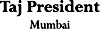

Introduction
Located just five minutes away from the main business district in South Mumbai, Taj President is one of Mumbai's finest business hotels.
Accommodation
Taj President comprises of 292 elegantly furnished rooms and suites, ranging from Executive Rooms, Deluxe rooms and Deluxe Premium Rooms to the newly built Deluxe Premium Suites.
All rooms are well appointed, with the best in-room business and entertainment facilities.
Best Lunch Spots
Trattoria
Trattoria is one of the most buzzing all day dining restaurant in the city. The 24-hours coffee shop, better as an Italian speciality restaurant has an informal touch.
Konkan café
The theme at Konkan Café is nautical coastal .The restaurant serves an extensively researched a la carte menu from the Konkan coast of India.
Thai Pavilion
Mumbai's first and best Thai restaurant.
Open
We are proud to announce the opening of our new restaurant by the poolside "OPEN". Chef Ananda Solomon brings to you mouth watering creations designed exclusively to tease your senses.
Wink
The all new Asian, high- energy bar is a perfect combination of the latest music and mouth watering eats and an unparalleled ambience come together to provide an experience that is totally different.
Sugar N Spice - Pastry Shop and Delicatessen
Sugar 'N' Spice is a perfect place to grab a quick snack. In addition to their delicious variety of coffees, cakes, rolls, pastries and more.
Conference and Banquet Areas
Five banquet rooms with state-of-the-art lighting effects. The Presidential Ballroom comfortably seats 525 to 600 persons auditorium style or 50 to 800 persons for cocktails/receptions.
|